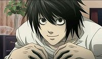
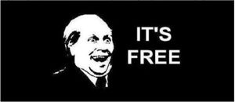

Síndrome de L Lawliet
 De: La Frikipedia, la enciclopedia extremadamente seria.
De: La Frikipedia, la enciclopedia extremadamente seria.
| De la serie enfermedades y padecimientos:
|
| Síndrome de L Lawliet
|
| 
|
| ¡Kira, yo te atraparé, porque la justicia soy yo!
|
|
| Nombre común
|
エル 症候群 (Tambien llamado tu madre, por si acaso)
|
| Clase
|
Enfermedades anime
|
| Afecta a
|
el cerebro, la columna vertebral, los pies y todos los órganos vitales
|
| Número de enfermos
|
aún sin conocer. Les da por intentar esconder su identidad.
|
| Pruebas clínicas
|
ambientar una habitación como una cafetería, dejar un trozo de tarta de fresa y observar detrás de un cristal tintado.
|
| Extendida en
|
todo el mundo.
|
| Diagnosis (síntomas)
|
imitar a L en todo momento
|
| Tratamiento
|
Poner al paciente en una báscula y deprimirle demostrándole que no es L
|
| Prognosis (expectativas)
|
conseguirá curarse en un 30% de los casos. En el otro 70% se dará cuenta de que L es bulímico y continuará imitándole con ese nuevo dato
|
| ¿Contagiosa?
|
extremadamente
|
| Dieta
|
fresas, pasteles de fresas, dulces, azúcar con café y piruletas y más dulces
|
| Caso famoso
|
Niño loco alemán
|
El síndrome de Lawliet es una enfermedad muy dura y difícil. Muchas de las personas que han sufrido esta enfermedad han padecido muchas otras como paro cardiaco.
Sus síntomas más comunes son intentar sentarse como L, vestir como L, inventarse probabilidades y intentar violar encontrar a alguien con un cuaderno negro para echarle la culpa de ser Kira.
Acciones propias de los pacientes
- Intentan cambiarse el nombre por la letra por la cual empiece su nombre.
- Dejan de ir al instituto porque se creen superiores a toda esa gentuza que estudia.
- Gastan todos sus ahorros en chuches.
- Venden toda su ropa (a excepción de un suéter blanco, unos vaqueros, unos calcetines y unas deportivas también blancas) para comprar más gominolas.
- Si ven a alguien hablando por el móvil, le acusa de hablar con un shinigami y de ser Kira.
- Intenta
sodomizar interrogar a sus amigos después de un partido de tennis.
- Venderá los órganos de sus amigos para comprar más chuches.
- Intentará psicoanalizarte todo el rato.
- Te robará tus chuches si te distraes.
- En su cumpleaños tendrá una gran tarta de fresa que se comerá él solito.
- Y venderá todos sus regalos para comprar más chuches.
- Les tocará el culo a las chicas cuando no se den cuenta. Les robará el móvil y lo venderá para comprarse más chuches.
- Se fijará en un pobre infeliz, que será el blanco de TODAS sus sospechas/acusaciones/
violaciones/teorías.
- Intentará hacerle confesar que él es Kira mediante técnicas ilegales, chantaje emocional y vigilancia perpetua (aun cuando no se ha visto la serie)
- Se esposará a él en un descuido y se tragará la llave entre muchas golosinas.
- Intentará descubrir quién es IP anónima
- Pondrá de fondo la música de L (L theme) y comenzará a desvariar hasta que acabe la canción con montones de teorías y probabilidades inventadas que no vienen a cuento.
muchas veces los enfermos se confunden con los del síndrome de después del cumpleaños (
Beyond Birthday)
Casos similares
Información importante
Los pacientes con ésta enfermedad suelen estar armados con un montón de palabras extrañas, mal utilizadas y un 79% de posibilidades de confundirte. Además, son peligrosos porque si les caes mal, te acusarán de ser un asesino/Kira para que la policía se detenga. Si les preguntas por su nombre, harán lo mismo. Si intentas presentarselos a tu novia, también. Y si les da un infarto (cosa muy posible, por el hecho de comer tanto dulce) dirán que es por tu culpa y que tu eres Kira, y serás ejecutado en la silla eléctrica.
A parte de eso, intentará llevarse genial con tu padre y le hará creer a él también que eres un asesino en serie. Y lo peor de todo es que en muchas ocasiones resulta convincente. Es capaz de poner a todo el mundo en tu contra por una piruleta y te odiará hasta la muerte como no hagas lo que le dé la gana en todo momento.
Fases de ésta enfermedad
- Nacimiento. Cuando El sujeto comienza a darse cuenta de su admiración a L. Le imita en contadas ocasiones y su dieta también incluye alguna cosa saludable.
- Ansiedad. Cuando El sujeto comienza a experimentar deseo de comer cucherías entre comidas. En ésta fase los pacientes suelen engordar entre 5 y 100 kg.
- Segundo L. El sujeto ya no tiende a razones y tiene todos los síntomas de ésta enfermedad.
- Nuevo L. El sujeto sabe que L era bulímico y le imita a la perfección. Las personas en ésta fase son consideradas "inteligentes" y se autodestruyen con trastornos alimenticios y numerosas enfermedades por falte de luz solar/contacto social.
Datos positivos si eres amigo de alguien con este síndrome
- Es muy paranoico y por eso casi nunca sale de casa.
- Es perfecto para bromas telefónicas gracias al distorsionador de voz que tiene en su ordenador.
- Como siempre lleva chuches encima, puedes aprovechar un descuido para robárselas.
- Suelen tener una cara sospechosa de la que te puedes aprovechar para distraer a los de seguridad mientras tu te llevas algo de una tienda.
 típica cara del amigo de alguien con ésta enfermedad
- Si te hacen alguna putada (Que te las harán) tienden a darte dinero como compensación.
- Estar vigilado constantemente es una buena forma de evitar que atenten contra ti.
- Suelen ser utilizados para ligar (gracias a su alto nivel de extravagancia en vena, igual ni pareces friki)
- Le puedes hundir en la miseria diciéndole la verdad acerca de su personaje favorito: que no existe y aunque existiese, está muerto.
- Si deja de servirte, puedes matarle.
- Si se pone pesado, puedes denunciarle.
Frikipedia 2005-2016, Licencia
GFDL 1.2 - Extraído por FrikiLeaks